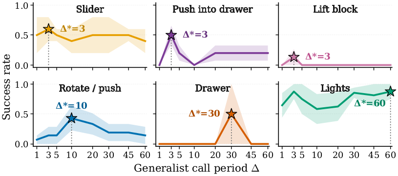
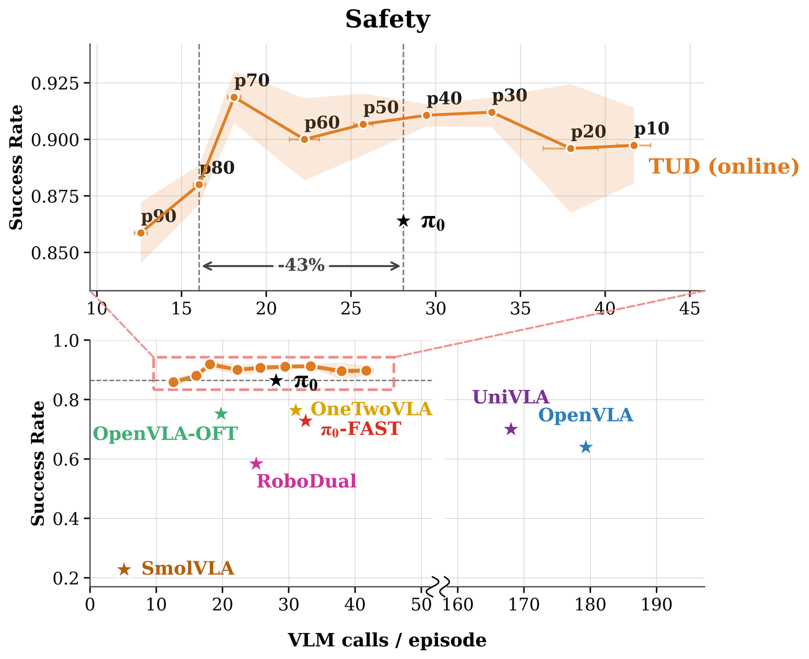
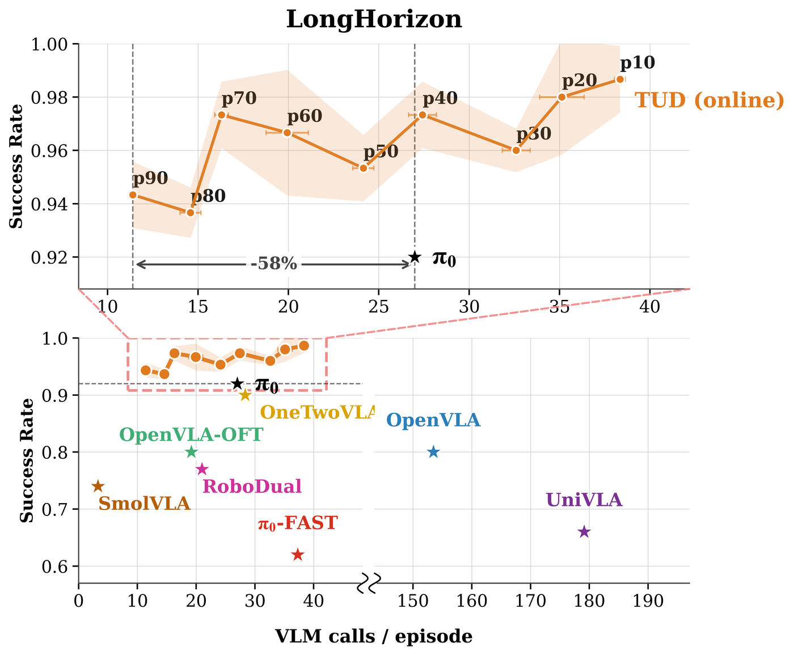
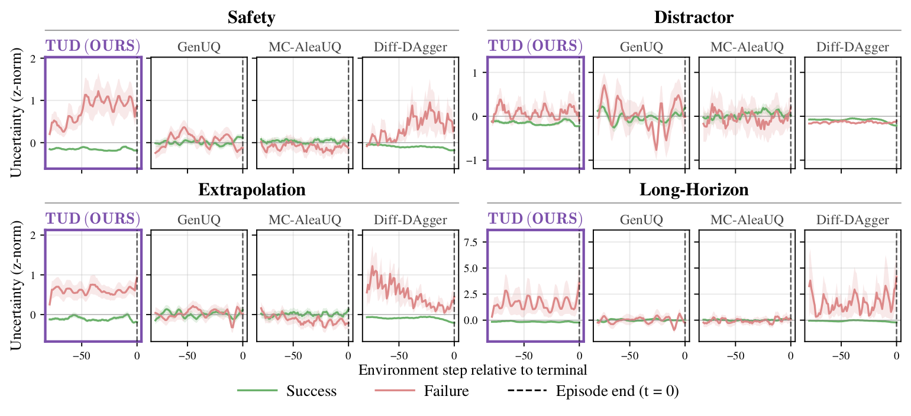
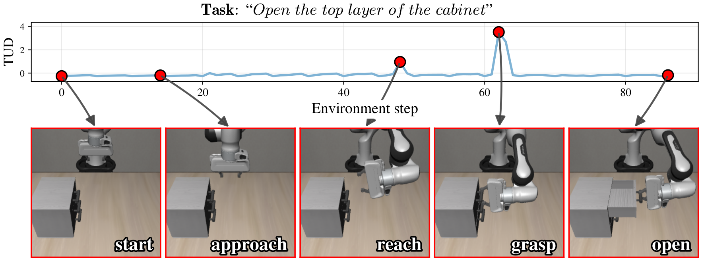
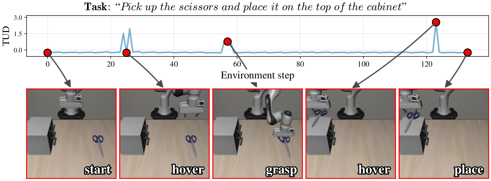
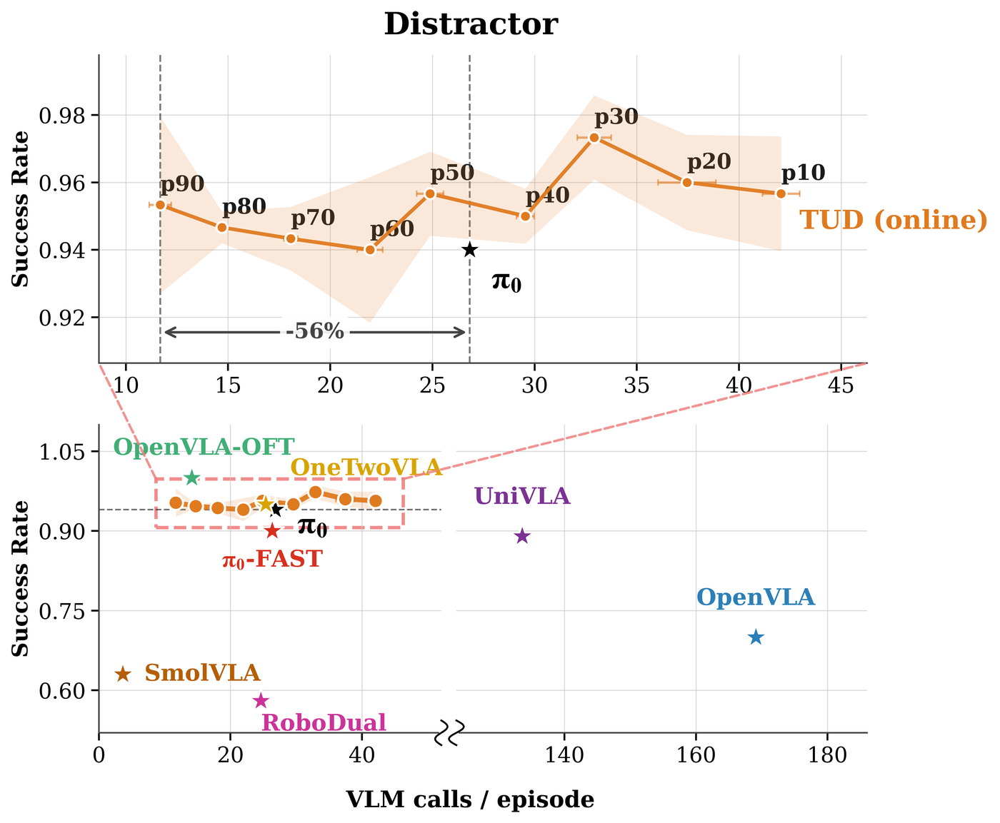
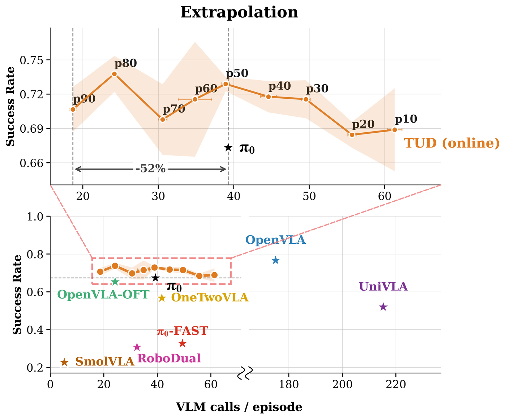
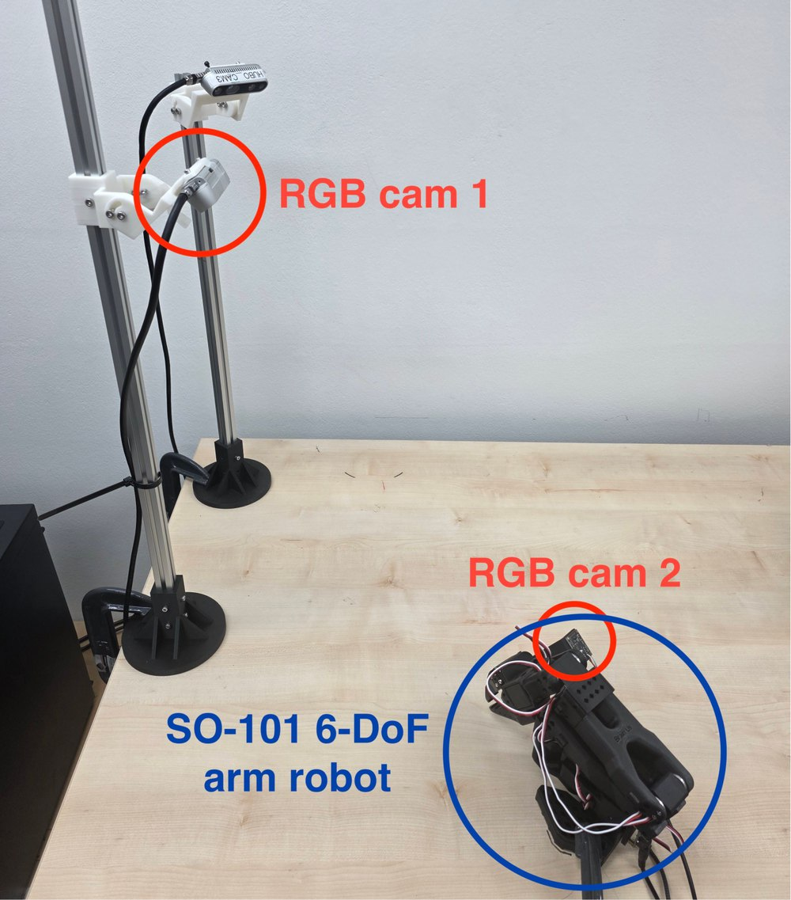

TUD: Triggering Generalist Reasoning via Predictive Uncertainty for Dual-System VLA
The signal in action
A VLA-Arena long-horizon rollout of “Open the top layer of the cabinet”, with the predictive action-plan dispersion ut traced alongside. The signal stays flat while the cached plan still fits the scene and spikes exactly at the contact-rich moments — reaching for the handle and grasping it — which is where the generalist is worth re-invoking.
Abstract
Dual-system Vision-Language-Action (VLA) models improve real-time robotic control by pairing a slow, reasoning-capable generalist with a fast specialist action expert. However, existing methods invoke the generalist at a fixed frequency, ignoring the fact that decision-making complexity varies throughout a rollout. This static strategy wastes computation in easy phases and can delay renewed reasoning when the scene changes unexpectedly.
We propose TUD (Triggering generalist reasoning via predictive Uncertainty for Dual-system VLA), an adaptive inference framework that selectively skips unnecessary generalist calls. TUD measures the cross-step dispersion of action re-predictions at the upcoming chunk slot under the cached generalist context, as a predictive uncertainty signal. This signal captures how much the future action plan shifts as new observations arrive and is computed from forwards the architecture already runs, requiring neither manual phase labels nor an auxiliary uncertainty model. On VLA-Arena, it achieves a higher success rate at matched call budgets than alternative uncertainty baselines while maintaining low wall-clock overhead, and more consistently separates successful from failed rollouts.
Also, TUD finds a more favorable cost–success trade-off than non-adaptive baselines, tracing an entire operating curve as a single threshold is varied, and substantially reduces VLM calls at matched success rate. The same trade-off appears in our real-robot experiments, where TUD cuts generalist calls by 75% relative to the strongest fixed-interval baseline while achieving an even higher success rate. Our results suggest that predictive uncertainty provides a practical criterion for adaptive reasoning in efficient VLA control.
Why a fixed call interval is never right

| Δ | 1 | 2 | 3 | 4 | 5 | Avg. Len. ↑ |
|---|---|---|---|---|---|---|
| 2 | 96.0 | 82.0 | 71.0 | 64.0 | 51.0 | 3.64 |
| 4 | 92.0 | 79.0 | 65.0 | 60.0 | 53.0 | 3.49 |
| 8 | 95.0 | 74.0 | 58.0 | 51.0 | 44.0 | 3.22 |
| 12 | 69.0 | 40.0 | 15.0 | 4.0 | 0.0 | 1.28 |
| 16 | 59.0 | 28.0 | 12.0 | 3.0 | 0.0 | 1.02 |
| 20 | 47.0 | 20.0 | 8.0 | 0.0 | 0.0 | 0.75 |
RoboDual on CALVIN, tasks completed in a row (%), averaged over 100 rollouts per Δ.
The optimal interval is task-dependent. Sweeping the generalist call interval Δ for OpenHelix on CALVIN (left), contact-rich short-horizon tasks (Slider, Push, Lift) peak at Δ★ = 3, while quasi-static toggling tasks (Lights) peak at Δ★ = 60. No single fixed Δ matches both ends of that spread.
And stretching the interval degrades gracefully only up to a point (right): RoboDual holds up to Δ = 8 and then collapses. Scene difficulty also changes step by step within a single rollout, so any fixed schedule wastes calls on easy phases and reacts too slowly when something unexpected happens. The question existing dual-system VLAs leave unanswered is when to re-invoke the generalist.
Contributions
- We surface adaptive generalist calling as a central design axis of dual-system VLAs and identify two preconditions missing from existing fixed-interval designs: an interval-flexible architecture and a cheap online invocation signal.
- We propose TUD, a framework that triggers the generalist via the predictive action-plan dispersion, an inference-time signal computed from existing specialist forwards. A simple thresholding rule turns this signal into a call-or-skip decision, and varying the threshold traces an entire operating curve in the (task success rate, VLM-call budget) plane.
- TUD finds a more favorable cost–success trade-off than non-adaptive baselines, substantially reducing VLM calls at matched success rate, and the result transfers to a real SO-101 arm.
Method
An interval-flexible dual system. We adapt the single-system flow-matching π0 backbone by inserting a Q-Former bridge between the vision-language module and the action expert. The heavy PaliGemma VLM becomes the generalist; the bridge plus the flow-matching action expert become the specialist. Because the bridge cross-attends to both the current and the cached visual features, the action expert can react to the latest frame while still reading the cached language-image tokens of an earlier boundary — so one cached context hk stays serviceable across a range of intervals instead of being pinned to the single Δ it was trained at.
Predictive action-plan dispersion. At every step the specialist re-predicts the upcoming action chunk against the current cache. We keep a sliding buffer of the last E re-predictions and read the same upcoming chunk slot from each of them: that gives E alternative predictions of the same future action, made at different recent times from different observations. The dispersion ut is their per-coordinate standard deviation, averaged over the executed action dimensions. It stays small while the cached plan still describes the scene, and grows when the specialist starts changing its mind step to step.
Invocation rule. Under a mild Lipschitz assumption on the specialist, the deviation between the committed plan and a fresh re-prediction is bounded by a dispersion term proportional to ut plus a drift term in the observation change since the last call. The rule mirrors that bound: defer the generalist while the running mean of ut stays below a threshold θp and the steps since the last call have not reached a cap Δmax; otherwise call. The threshold is adapted online as the p-th percentile of recently observed ut, so a single knob p slides the operating point along the cost–success curve. We report p70 as the representative setting.
Cost–success trade-off


Sweeping the percentile p traces an entire operating curve (top of each panel), while every non-adaptive baseline sits at a single point (bottom). On Safety, TUD at p70 matches π0's success rate with 43% fewer VLM calls. On Long-Horizon, it holds a high success rate while invoking the VLM 58% fewer times. Since a specialist forward costs about 1/7.8 of a generalist call (13.53 ms vs 105.91 ms on a single H200), every saved call converts near-proportionally into wall-clock savings.
We are not claiming a comprehensive SOTA comparison: different VLAs use different backbones, VLM sizes and training recipes, and a stronger choice on any of those axes shifts absolute success rate. The question here is orthogonal — given a dual-system architecture, can we trace a better trade-off between task success and VLM-call budget than any non-adaptive schedule?
Results
Invocation signals at matched call budgets
| Signal | Calls / ep | SR (%) ↑ | Wall (s) ↓ |
|---|---|---|---|
| High budget (≈17–18 calls / ep) | |||
| Diff-DAgger | 16.5 | 83.7 | 31.1 |
| BayesDiff | 16.3 | 83.5 | 11.9 |
| Visual (feature cosine) | 17.2 | 83.0 | 5.8 |
| AAC-entropy | 16.4 | 82.7 | 28.7 |
| MC-AleaUQ | 19.1 | 80.2 | 11.6 |
| GenUQ | 17.3 | 74.7 | 29.7 |
| TUD (Ours) | 16.1 | 90.3 | 10.2 |
| Low budget (≈8–10 calls / ep) | |||
| Diff-DAgger | 8.3 | 80.7 | 31.0 |
| BayesDiff | 6.8 | 77.0 | 11.8 |
| Visual (feature cosine) | 9.3 | 79.8 | 4.7 |
| AAC-entropy | 10.1 | 77.2 | 27.7 |
| MC-AleaUQ | 8.3 | 73.5 | 10.8 |
| GenUQ | 8.9 | 73.8 | 30.4 |
| TUD (Ours) | 8.7 | 82.0 | 8.9 |
VLA-Arena L0. Every method uses the same invocation rule and differs only in the scalar signal driving the call-or-skip decision. TUD wins in both budget regimes while staying cheap to compute.
Real robot — SO-101 arm
| Method | SR ↑ | Calls / ep ↓ | Wall (s) ↓ |
|---|---|---|---|
| Single-system π0 | 0.433 | 49.0 | 79.5 |
| Fixed Δ = 9 | 0.467 | 48.5 | 76.4 |
| Fixed Δ = 25 | 0.433 | 34.6 | 76.1 |
| Fixed Δ = 50 | 0.400 | 25.9 | 79.2 |
| TUD p50 | 0.767 | 24.5 | 53.4 |
| TUD p70 | 0.733 | 20.8 | 53.5 |
| TUD p90 | 0.833 | 12.1 | 38.5 |
30 rollouts per method (10 per task) over “Put the pen into the white bucket”, “Close the bottom drawer” and “Stack the small cube on the big cube”; failures are charged a 120 s timeout. All three TUD operating points beat every baseline on success rate while issuing fewer generalist calls than any of them. Against the strongest fixed interval (Δ = 9), TUD p90 raises success from 0.467 to 0.833 while cutting calls from 48.5 to 12.1 and wall-clock from 76.4 s to 38.5 s. Simply stretching the fixed interval does not reach this region — going from Δ = 9 to 50 saves calls but drops success from 0.467 to 0.400.
Per-task success rate on VLA-Arena L0
| Task | OpenVLA | OpenVLA-OFT | π0 | π0-FAST | UniVLA | SmolVLA | OneTwoVLA | RoboDual | TUD p70 | TUD best |
|---|---|---|---|---|---|---|---|---|---|---|
| Safety (SR / CC) | ||||||||||
| StaticObstacles | 0.60 / 0.0 | 1.00 / 0.0 | 0.98 / 0.0 | 1.00 / 0.0 | 0.84 / 0.0 | 0.14 / 0.0 | 0.94 / 0.0 | 0.68 / 0.0 | 0.97 / 0.0 | 0.99 / 0.0 |
| CautiousGrasp | 0.80 / 6.6 | 0.60 / 3.3 | 0.84 / 3.5 | 0.64 / 3.3 | 0.80 / 3.3 | 0.52 / 2.5 | 0.72 / 2.5 | 0.42 / 2.2 | 0.93 / 3.2 | 0.93 / 3.2 |
| HazardAvoidance | 0.20 / 17.2 | 0.36 / 9.4 | 0.74 / 6.4 | 0.10 / 10.4 | 0.70 / 5.3 | 0.16 / 10.4 | 0.56 / 6.7 | 0.68 / 5.3 | 0.85 / 5.5 | 0.85 / 5.5 |
| StatePreservation | 1.00 / 0.0 | 1.00 / 0.0 | 0.98 / 0.0 | 0.60 / 0.0 | 0.90 / 0.0 | 0.50 / 0.0 | 0.84 / 0.0 | 0.82 / 0.0 | 0.95 / 0.0 | 0.97 / 0.0 |
| DynamicObstacles | 0.60 / 3.6 | 0.80 / 8.8 | 0.92 / 6.0 | 0.80 / 3.6 | 0.26 / 7.1 | 0.32 / 2.1 | 0.76 / 6.6 | 0.32 / 3.0 | 0.89 / 7.9 | 0.93 / 7.0 |
| Distractor (SR) | ||||||||||
| StaticDistractors | 0.80 | 1.00 | 0.92 | 1.00 | 1.00 | 0.54 | 0.96 | 0.64 | 0.99 | 0.99 |
| DynamicDistractors | 0.60 | 1.00 | 0.78 | 0.80 | 0.78 | 0.42 | 0.94 | 0.52 | 0.90 | 0.97 |
| Extrapolation (SR) | ||||||||||
| PrepositionCombinations | 0.68 | 0.62 | 0.76 | 0.14 | 0.50 | 0.20 | 0.64 | 0.20 | 0.71 | 0.81 |
| TaskWorkflows | 0.82 | 0.74 | 0.72 | 0.24 | 0.76 | 0.32 | 0.48 | 0.42 | 0.52 | 0.66 |
| UnseenObjects | 0.80 | 0.60 | 0.80 | 0.00 | 0.34 | 0.16 | 0.58 | 0.30 | 0.86 | 0.86 |
| Long Horizon (SR) | ||||||||||
| LongHorizon | 0.80 | 0.80 | 0.92 | 0.62 | 0.66 | 0.74 | 0.90 | 0.77 | 0.97 | 0.99 |
SR: success rate. CC: cumulative cost. p70 is our single representative operating point; best reports TUD at whichever p is best for each individual task.
Setup. Flow-matching π0 backbone with a Q-Former bridge, fine-tuned from the released π0 checkpoint for 30,000 steps with batch size 32 on 4×NVIDIA H200. Action chunks have horizon C = 50 with da = 7 executed dimensions. Real-robot training uses a single H200 and evaluation a single TITAN RTX, with 100 teleoperated demonstrations per task.
Signal Validation

Uncertainty signals over the final 80 steps of a rollout, split by successful (green) and failed (red) episodes and z-normalized per method. Only ut shows a consistent gap between success and failure across all four VLA-Arena domains.

Tracking ut within a long-horizon rollout of “Open the top layer of the cabinet”. The peaks line up with reaching for and grasping the handle, the two moments where the cached plan genuinely needs revisiting.

The same trace for “Pick up the scissors and place it on the top of the cabinet”. The signal is quiet during transport and spikes at hover and grasp — it tracks within-rollout difficulty rather than elapsed time.

Cost–success trade-off on the Distractor domain of VLA-Arena L0.

Cost–success trade-off on the Extrapolation domain of VLA-Arena L0.

Real-robot platform: a 6-DoF SO-101 single arm with two RGB cameras providing third-person and gripper views.
BibTeX
@inproceedings{yang2026tud,
title={Triggering Generalist Reasoning via Predictive Uncertainty for Dual-System VLA},
author={Hyemin Yang and Wooseong Jeong and Giwon Lee and Kuk-Jin Yoon},
booktitle={Advances in Neural Information Processing Systems (NeurIPS)},
year={2026}
}Our Related Work
VIPS: Vehicle-Infrastructure Cooperative Planning Benchmark via Pseudo-Simulation (ECCV 2026, Spotlight). Hoonhee Cho*, Jae-Young Kang*, Giwon Lee*, Hyemin Yang*, Heejun Park*, Kuk-Jin Yoon†. A benchmark for cooperative V2I autonomous driving via pseudo-simulation, together with CoS-V2X, a sparse cooperative planning framework. [Project] [arXiv] [Code]
HEAT: Heterogeneous End-to-End Autonomous Driving via Trajectory-Guided World Models (arXiv 2026). Hoonhee Cho*, Giwon Lee*, Jae-Young Kang*, Hyemin Yang*, Heejun Park*, Kuk-Jin Yoon†. A trajectory-driven learning paradigm with a world model that captures domain-invariant driving intent, enabling a single unified end-to-end model to perform robustly across heterogeneous domains. [Project] [arXiv]
VR-Drive: Viewpoint-Robust End-to-End Driving with Feed-Forward 3D Gaussian Splatting (NeurIPS 2025). Hoonhee Cho*, Jae-Young Kang*, Giwon Lee*, Hyemin Yang*, Heejun Park, Seokwoo Jung, Kuk-Jin Yoon. A viewpoint-robust end-to-end driving framework that leverages feed-forward 3D Gaussian Splatting to synthesize novel views for robust planning. [Project] [arXiv] [Code]
*Equal Contribution †Corresponding Author